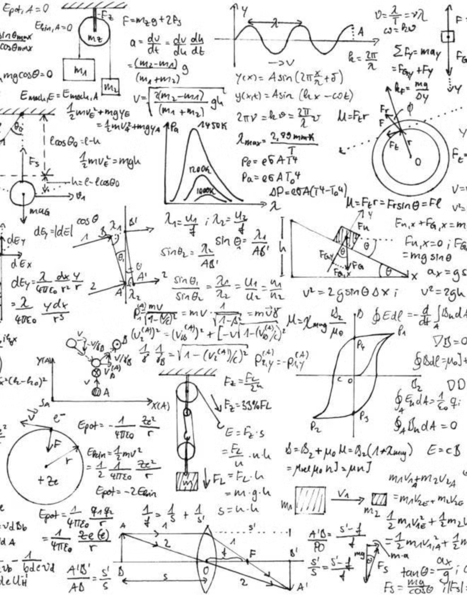

🎭 Kendrick Lamar released GNX during a time when algorithms have redefined how art is consumed, shared, and valued. Jaron Lanier warns of the subtle yet profound way algorithms shape behavior, fostering addiction to fleeting rewards like likes, shares, and trends. These dynamics drive a hyper competitive attention economy where cultural products are optimized for maximum virality rather than depth or authenticity.
For all the marketing and algorithm nerds out there, Kendrick’s release was certainly puzzling. It was for all the best reason though. GNX was released last Friday with no announcement, for the purpose of immediacy. Some, like myself, would classify Kendrick’s 2024 as a whole as a straight up Hijacking of Pop Culture 🥷. He took the year by the neck after dismantling Drake and ended the year with the biggest, and perhaps best, rap album.
In GNX, Kendrick resists these pressures, creating an album that feels out of sync with the algorithmic timeline with his rollout. There’s no ❌ push for quick virality—no coordinated TikTok challenges or “content-friendly” hooks designed to capture fleeting trends. By deliberately avoiding these mechanisms, Kendrick disrupts the cycle of immediacy and rewards listeners willing to engage deeply with his work. This refusal to cater to algorithms forces his audience to experience the album outside the usual cultural conveyor belt, reclaiming the pace and space for critical engagement. He has never been a frequent social media user, in fact, if you were to look at his twitter account right now, his last five tweets are all links to his music. Most of this of course, being the feud with Drake and an announcement for his Super Bowl performance
Jaron Lanier's Philosophy
↓ ↓ ↓
💡 Lanier’s concept of “detachment from reality” resonates here: algorithms create a distorted sense of what’s popular or important, driving us further from genuine experiences. Kendrick uses this timing to ask: what happens when we step outside the feed and engage with art as a means of reflection rather than a momentary distraction? What happens when we remain true to the community that raised us?